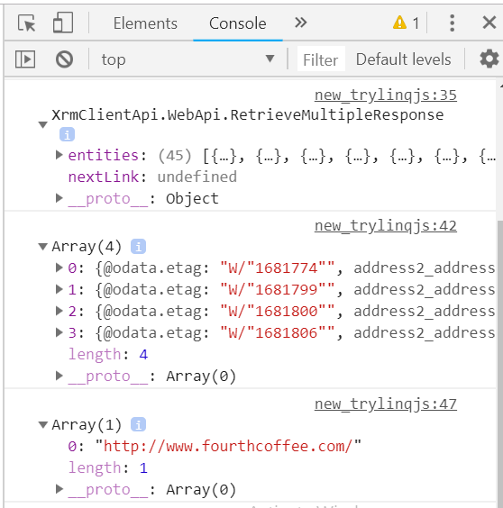

Recently I was working in some large JSON objects in client side javascript where I had to query through it several times as per requirement I was using javascript array’s functions. Then I thought why not use lodash.js or underscore.js I checked over github they are really feature rich and trustworthy, but there was a whole new list of functions and syntax to learn.
Then after few more google search I got sevearal javascript libraries with LINQ like syntax, after comparing I found linq.js most promising and even size is lesser when comparing to lodash and underscore.
| Library | GZipped size |
|---|---|
| lodash | ~ 24 KB |
| linq.js | ~ 7 KB |
| underscore | ~ 6.6 KB |
linq.js github project link -> https://github.com/mihaifm/linq
With Linq.js dynamics 365 developers can use their existing knowledge of LINQ in javascript code whith nominal changes. see below examples from their github
// C# LINQ - delegate
Enumerable.Range(1, 10)
.Where(delegate(int i) { return i % 3 == 0; })
.Select(delegate(int i) { return i * 10; });
// linq.js - anonymous function
Enumerable.range(1, 10)
.where(function(i) { return i % 3 == 0; })
.select(function(i) { return i * 10; });
// C# LINQ - lambda
Enumerable.Range(1, 10).Where(i => i % 3 == 0).Select(i => i * 10);
// linq.js - arrow function
Enumerable.range(1, 10).where(i => i % 3 == 0).select(i => i * 10);
// C# LINQ - anonymous type
array.Select((val, i) => new { Value = val, Index = i });
// linq.js - object literal
Enumerable.from(array).select((val, i) => ({ value: val, index: i}));
Example with Dynamics 365/CRM
Let’s retrieve some data from CRM and query in client side javascript. First of all download and save linq.min.js as a javascript webresource, and save below code as html webresource and change your linq.js webresource name accordingly.
<head>
<title>Trying linq.js</title>
<script src="/WebResources/new_linq.js" type="text/javascript"></script>
<script src="ClientGlobalContext.js.aspx" type="text/javascript"></script>
<script>
// to bypass a product bug, ignore this
window["ENTITY_SET_NAMES"] = window["ENTITY_SET_NAMES"] || '{ "account" : "accounts"}';
// retrieving accoount records
Xrm.WebApi.retrieveMultipleRecords("account").then(
function(result) {
debugger;
console.log(result);
// storing all the records to var accounts
var accounts = result.entities;
// build query filter all records with address1_city == "Redmond"
var accountsCityRedmond = Enumerable.from(accounts).where(a => a.address1_city == "Redmond");
// use toArray(); to evaluate the query
console.log(accountsCityRedmond.toArray());
// previously built query can be filtered even further
var accountsCityRedmondCountryColumbia = accountsCityRedmond.where(a => a.address1_country == "Columbia").select(w => w.websiteurl);
// and can be evaluated anytime with .toArray()
console.log(accountsCityRedmondCountryColumbia.toArray());
},
function(error) {
console.log(error.message);
}
);
</script>
</head>
Run above HTML web resource in browser & press F12 to see output, it would be similar to below shown output, I have run this code in newly created trial instance of dynamics 365.
Go through code comments to understand it better.

Hope it helps. Feel free to ask any questons.